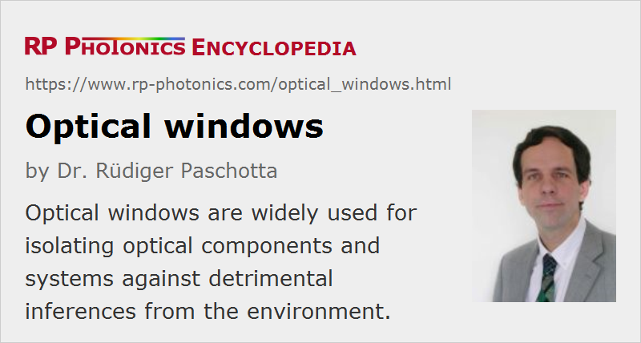

Optical Windows
Definition: flat transparent plates with optical quality, used for protection against the environment
More specific term: Brewster windows
German: optische Fenster
How to cite the article; suggest additional literature
Author: Dr. Rüdiger Paschotta
Most optical windows are made in the form of flat plates of a transparent medium (e.g. glass, crystal or polymer). They are often used for isolating optical systems or components against detrimental influences from the environment. For example, most photodiodes and other kinds of photodetectors often contain an optical window above their light-sensitive area to protect it against dirt, corrosive influences and mechanical damage. Similarly, housings of lasers are often protected with optical windows in order to keep the housing free of any dust.
In some cases, for example for the active tubes of gas lasers like helium–neon lasers, there are optical windows separating the inside low-pressure gas volume from the outside atmosphere. Similarly, windows are needed for multipass gas cells as used in spectroscopy. If such windows are not rigidly connected, one may require some suitable type of seals to get a housing reliably air-tight. There are special vacuum windows built into vacuum viewports, coming together with suitable seals and mounting parts.
There are also strongly curved optical windows, which are called optical domes.
Common optical materials used for optical windows are glasses like fused silica and BK7 for visible or near-infrared light. For infrared optics at longer wavelengths, one also uses various types of crystalline materials such as calcium fluoride, zinc selenide, silicon and germanium. Particularly for low-cost mass applications, some polymer materials are also often used, e.g. PMMA acrylic. They may be equipped with anti-scratch coatings for making them more resistant.
In some cases, an optical element such as a lens or a mirror can at the same time fulfill the function of an optical window, so that no separate part is required for that. Note, however, that a separate optical window may be advantageous in rough environments, since it is both easier and cheaper to exchange it, compared with exchanging a high quality optical element.
Optical Losses
Usually, it is important to avoid significant losses of optical radiation going through an optical window. Such losses can occur due to different effects:
- The material, even when being very pure, can exhibit some level of absorption. To avoid that, one chooses a material with a sufficiently large transparency range of wavelengths, where the absorption is minimal. There are many glasses with a transparency range well covering the whole visible region, and others which are well suited for infrared light. Crystalline materials are also often used in the infrared.
- Some level of scattering losses and/or beam distortion may occur if the medium is not optically homogeneous. For example, low-quality glasses may exhibit locally varying concentrations of certain substances, which lead to variations of refractive index.
- Furthermore, non-perfect optical surfaces can lead to scattering and also to beam profile deformations (see below). Such effects can be minimized by preparing surfaces with high optical quality, i.e., with high flatness and low roughness.
- Finally, there is usually some level of optical reflections at the surfaces. Those can be problematic not only in terms of power loss, but also when parasitic back-reflections irritate a laser device, for example, but the latter effect can be eliminated by simply avoiding near normal incidence of the laser beam on the window. For minimizing reflections, one usually uses anti-reflection coatings. These work well only in a limited wavelength range. There are broadband coatings working in a large wavelength range, but typically with lower suppression of reflections than narrowband coatings (available for many laser line applications) can achieve in a small wavelength range. Some optical windows are sold in uncoated form and are later custom-coated by the user.
Note that the power losses at an optical window can be polarization-dependent, if the incidence of light is far from normal incidence. An extreme case is that of a Brewster plate, where the angle of incident needs to be at Brewster's angle, so that the reflection losses are very small for p polarization (without using a coating), but rather high for s polarization. Such windows are called Brewster windows. They are often used for the tubes of gas lasers, for example.
Beam Distortions
It has already been mentioned above that beam distortions (wavefront errors) may be caused by optical windows of insufficient quality. That may also lead to a loss of beam quality of laser beams, or image distortions in viewing devices and cameras.
The surface quality of optical windows is often quantified with scratch–dig values according to the U.S. standard MIL-PRF-13830B, or alternatively in a more rigorous fashion based on ISO 10110-7. In addition, there are certain tolerances for surface flatness and irregularity. The article on laser mirrors, where surface quality is of particularly vital importance, contains some more details on such issues.
Optical window of particularly high quality are also sold as interferometer flats; this marks them as being suitable for use in interferometers, where low beam distortions are often of particular importance.
Besides deficiencies of the material itself, there can be inhomogeneities induced by mechanical stress. Therefore, optical windows should be mounted such that stress effects are avoided.
Problems with Dirt
A good surface quality should not only be achieved in production, but also be maintained by carefully transporting and mounting optical windows, and by avoiding adverse effects during operation. For example, the performance can be degraded by fingerprints (when touching surfaces), deposited dust and dirt, or by scratching the surface when touching them with hard parts. In applications involving intense laser pulses, e.g. from Q-switched lasers, dust and other dirt may be burned into a surface, making it difficult afterwards to remove it.
Some kinds of dirt can be removed from optical windows with appropriate cleaning procedures. For example, one may use a soft cleaning tissue and a few droplets of a suitable solvent (e.g. cleaning alcohol or acetone) to wipe the surface if it is well accessible. One should avoid wiping back and forth, only distributing dirt; instead, one should systematically wipe in one direction, getting any dirt outside the sensitive area. At the same time, care must be taken not to damage optical surfaces e.g. by touching them with any hard tools.
For applications in rough environments, one may use special holders which facilitate the quick exchange of damaged optical windows. For example, some windows are used as debris shields in laser material processing, and may have to be exchanged regularly. They are also called sacrificial windows. One may also try to protect windows to some extent e.g. with hard tube structures.
Changes of Beam Position or Direction
Most optical windows are parallel windows, having quite precisely parallel surfaces. The parallelism is often quantified, e.g. as <1 arcsec. With parallel faces, there is no change of beam direction, but only a slight beam position offset, dependent on the angle of incidence and the thickness; there is then often no need for precise alignment of the window.
The beam offset also has a slight dependence on the optical wavelength, since the wavelength-dependent refractive index leads to a wavelength-dependent beam direction within the plate. It is rare, however, that such effects cause problems.
There are also wedged windows, having a well defined angle between their surfaces. This is sometimes required for avoiding interference effects between the parasitic reflections from the two surfaces. Note that in this case there is some level of beam deflection, dependent on the orientation of the window. See also the article on wedge prisms.
Thermal Effects
For applications with very high optical powers, e.g. in laser material processing, even some small residual absorption in an optical window may cause some level of thermal lensing. (A small amount of dirt on a surface can of course strongly increase the strength of heating and its consequences.) Such thermal effects can depend on multiple properties of the material, in particular on the absorption coefficient, the thermal conductivity, the temperature dependence of the refractive index and photoelastic coefficients. Special high-quality materials may have to be chosen for such applications.
Various Relevant Properties
Various other detailed properties of optical windows may be relevant for applications. Some examples for such properties:
- cost and ease of procurement
- avoiding glass components like lead and arsenic (ecologically friendly materials)
- a suitable geometric shape for easy mounting and replacement
- a high optical damage threshold (e.g. for pulsed laser applications)
- a low thickness and density, if weight matters
- a high hardness, if resistance against mechanical influences is important
- a conductive surface, often made of ITO, used e.g. for electric shielding
Some suppliers offer custom windows with special specifications, often for special application areas such as aerospace and military.
Suppliers
The RP Photonics Buyer's Guide contains 141 suppliers for optical windows. Among them:
Questions and Comments from Users
Here you can submit questions and comments. As far as they get accepted by the author, they will appear above this paragraph together with the author’s answer. The author will decide on acceptance based on certain criteria. Essentially, the issue must be of sufficiently broad interest.
Please do not enter personal data here; we would otherwise delete it soon. (See also our privacy declaration.) If you wish to receive personal feedback or consultancy from the author, please contact him e.g. via e-mail.
By submitting the information, you give your consent to the potential publication of your inputs on our website according to our rules. (If you later retract your consent, we will delete those inputs.) As your inputs are first reviewed by the author, they may be published with some delay.
See also: Brewster plates, optical domes, anti-reflection coatings
and other articles in the category general optics
|  |
If you like this page, please share the link with your friends and colleagues, e.g. via social media:
These sharing buttons are implemented in a privacy-friendly way!